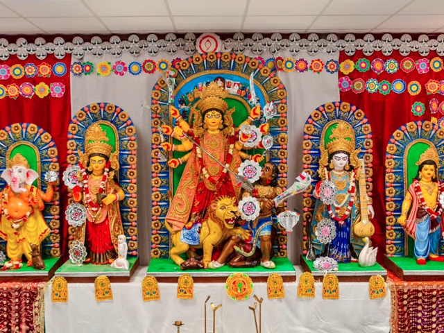
ক্যাম নদীর তীরে মা: নিখোঁজ শিল্পী ও এক হাঁড়ি খিচুড়ি
আজকের এই মনোগ্রাহী লেখাটির রচয়িতা আমাদেরই একজন প্রতিষ্ঠাতা সদস্য, যিনি পুজোর একেবারে শুরুর দিনগুলি থেকেই এর প্রতিটি খুঁটিনাটির সঙ্গে ওতপ্রোতভাবে জড়িত।
Read moreIndian Cultural Society
What the press has been saying about ICS and our festivals.

আজকের এই মনোগ্রাহী লেখাটির রচয়িতা আমাদেরই একজন প্রতিষ্ঠাতা সদস্য, যিনি পুজোর একেবারে শুরুর দিনগুলি থেকেই এর প্রতিটি খুঁটিনাটির সঙ্গে ওতপ্রোতভাবে জড়িত।
Read more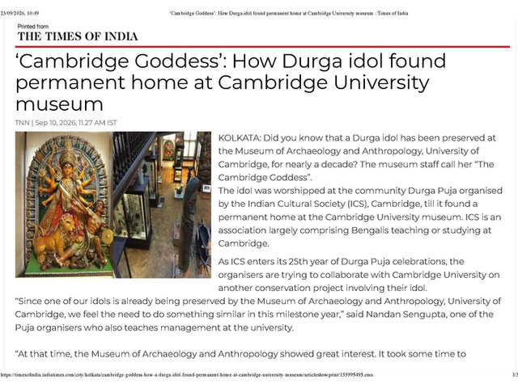
A Durga idol worshipped at the ICS community Durga Puja has been preserved at the Museum of Archaeology and Anthropology, University of Cambridge, for nearly a decade. The museum staff call her “The Cambridge Goddess”.
Read more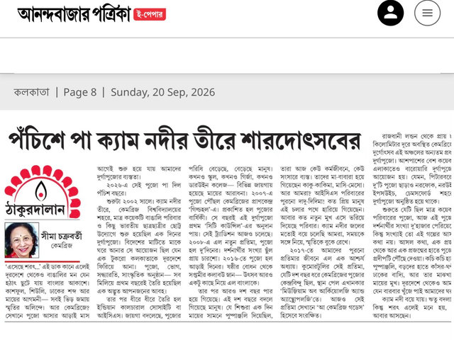
An article by one of our members in the Bengali daily Anandabazar Patrika.
Read more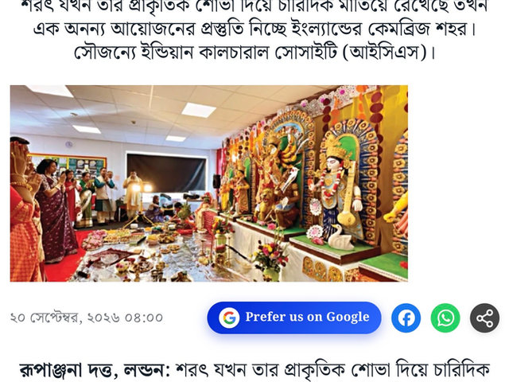
২৫ বছরে পা, বৈচিত্রের মধ্যে ঐক্যের মিলনক্ষেত্র কেমব্রিজের ইন্ডিয়ান কালচারাল সোসাইটির পুজো। রজত জয়ন্তী বর্ষে বৈচিত্রের মধ্যে ঐক্যের বার্তা তুলে ধরতে প্রস্তুত উদ্যোক্তারা।
Read more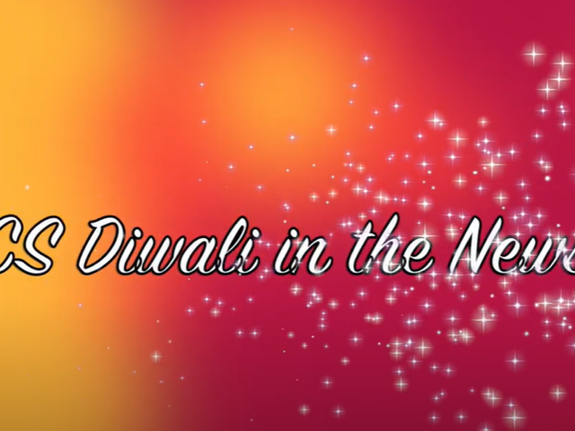
Our member and treasurer, Arijit Das, spoke at BBC Radio Cambridgeshire about the ICS Diwali and Kali Puja.
Read more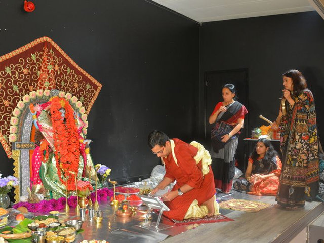
Cambridgeshire Live covers the ICS celebrations.
Read more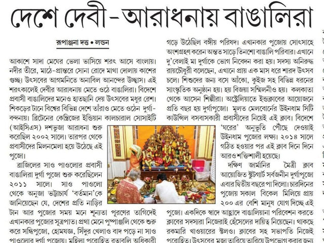
ICS Cambridge — ২০ বছরের দুর্গাপুজো।
Read more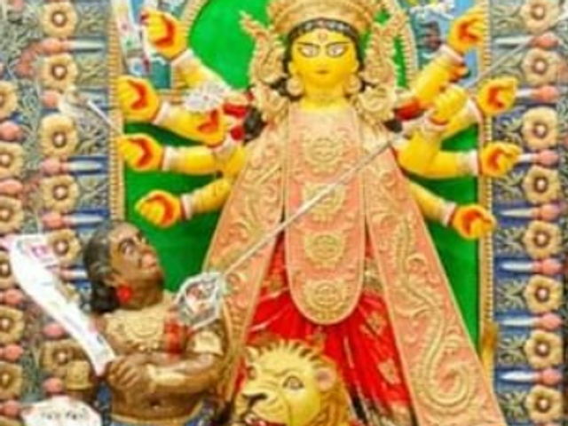
কেমব্রিজের বাঙালিদের ২০ বছরের দুর্গাপুজো নিয়ে প্রতিবেদন।
Read more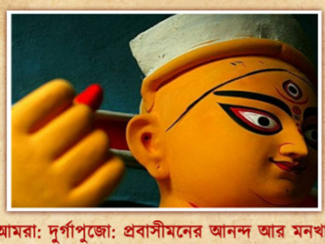
উৎসব ও আমরা — প্রতিবেদন।
Read more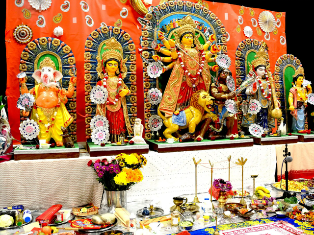
Check out what BanglaLive are saying about us!
Read more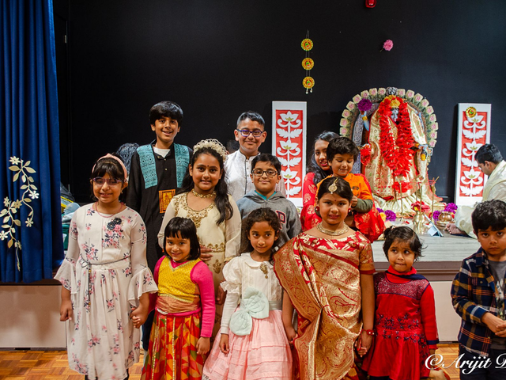
Diwali returns to Cambridge and brings the community together again.
Read more